Outil d’administration¶
L’outil d’administration¶
Cette documentation décrit les procédures pour l’activation et la gestion des différentes fonctionnalités de la plateforme TerraVisu.
L’outil d’administration de TerraVisu permet en quelques clics de gérer des utilisateurs, d’importer différentes sources de données géographiques, de créer et personnaliser ses cartes.
Résumé des fonctionnalités :
Gérer les sources de données géographiques
Configurer des fonds de cartes
Créer des visualisation privées
Créer des visualisation publiques
Créer des analyses privées
Créer des analyses publiques
Créer des scénarios interactifs
Organiser les visualisations et analyses présentes dans l’application
Authentification¶
Procédure d’authentification¶
Le chemin d’accès à l’outil d’administration d’une application TerraVisu est toujours constitué de l’URL du visualiseur suivis de /admin.
Une fois en possession des identifiants, vous pouvez les renseigner dans la page d’authentification.
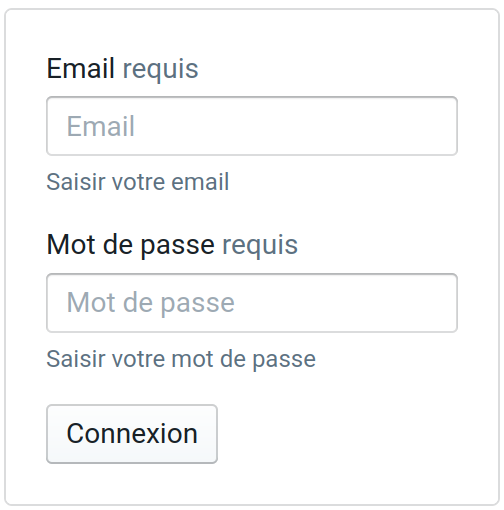
Page d’accès¶
Une fois connecté, vous arrivez sur l’écran d’accueil de l’outil d’administration. L’outil est composé de trois modules :
Utilisateurs, permet de gérer les utilisateurs de l’application
Visualiseur, permet de créer les cartes
Fonds de carte, permet de configurer les fonds de carte
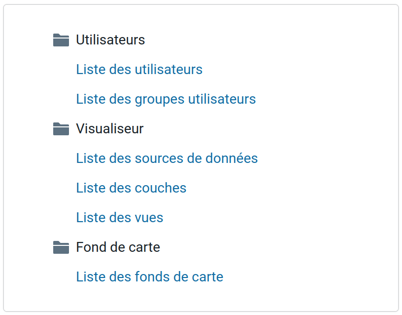
Module de gestion des utilisateurs¶
Liste des utilisateurs¶
Pour afficher l’ensemble des utilisateurs cliquez sur Liste des utilisateurs. Vous arrivez sur une page présentant la liste de tous les utilisateurs existants.
Le module Utilisateurs de TerraVisu permet de gérer les permissions d’accès des utilisateurs et des groupes d’utilisateurs aux différents éléments du visualiseur cartographique.
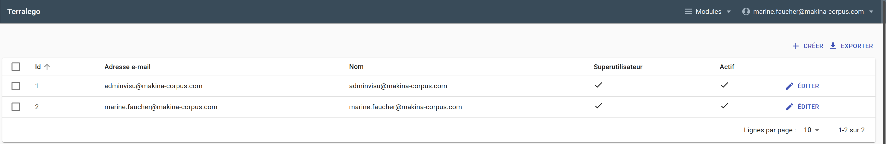
Vous avez la possibilité d’exporter la liste des utilisateurs au format CSV en cliquant sur le bouton EXPORTER.
Créer un nouvel utilisateur¶
Seuls les super-utilisateurs sont autorisés à créer de nouveaux utilisateurs.
Pour ajouter un nouvel utilisateur cliquez sur le bouton CRÉER.
Les informations à renseigner sont à minima le nom, le prénom, l’adresse mail, le mot de passe.
Si vous activez l’option Super-utilisateur l’utilisateur pourra à son tour créer de nouveaux utilisateurs.
Si vous activez l’option Actif l’utilisateur pourra se connecter dès que son compte sera créé, sinon, il devra attendre que celui ci devienne actif.
Vous pouvez intégrer l’utilisateur à un ou plusieurs groupes.
Il est possible de rajouter des informations supplémentaires comme la fonction, l’organisme de rattachement ou encore l’adresse.
Si l’utilisateur perd son mot de passe, il faut supprimer son compte et lui en créer un nouveau.
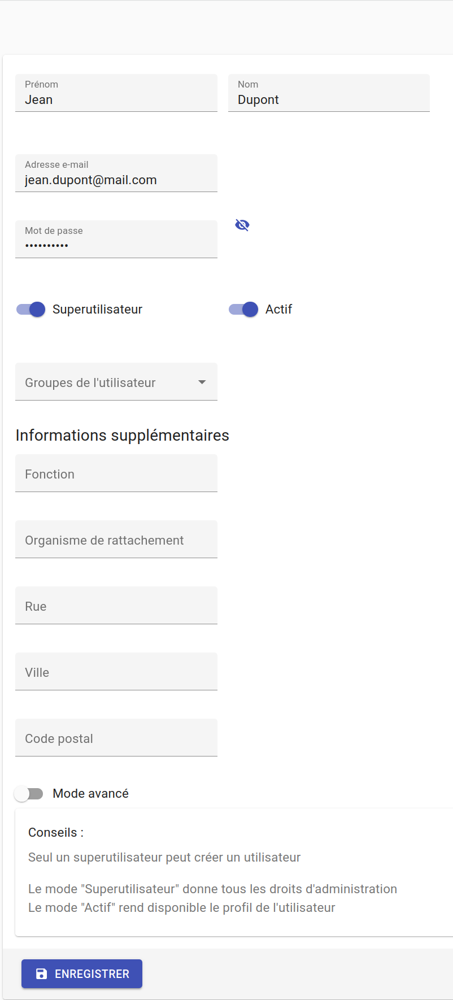
Liste des groupes d’utilisateurs¶
Les groupes d’utilisateurs permettent de gérer des permissions à différents niveaux de l’application.
Les permissions sont les suivantes :
L’administration de fonds de carte
La gestion des sources de données
La gestion des couches cartographiques
La gestion des groupes d’utilisateurs
La gestion des utilisateurs
Pour afficher l’ensemble des groupes cliquez sur Liste des groupes d’utilisateurs. Vous arrivez sur une page présentant la liste de tous les groupes existants.
Créer un nouveau groupe d’utilisateurs¶
Pour ajouter un nouveau groupe cliquez sur le bouton CRÉER.
Les informations à renseigner lors de la création d’un nouveau groupe sont à minima le nom, les utilisateurs affectés, les permissions.
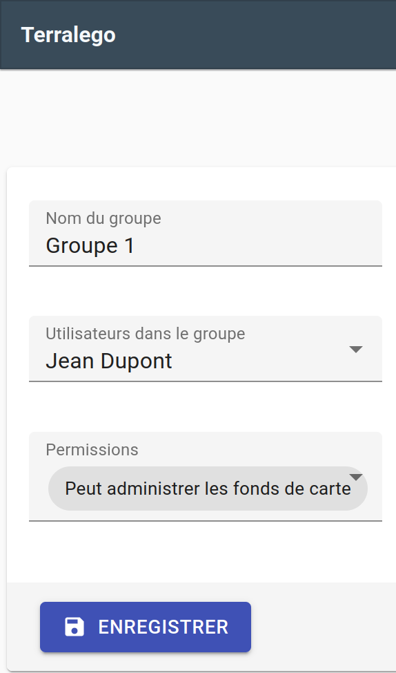
Module Visualiseur¶
Le module Visualiseur de TerraVisu permet de gérer les données de l’application et le paramétrage de leur(s) représentation(s).
Il comporte trois entrées :
Les sources de données
Les couches
Les vues
Liste des sources de données¶
Afin de configurer une visualisation, l’utilisateur doit créer les différentes sources de données en adéquation avec le projet si elles n’existent pas déjà.
Pour afficher l’ensemble des sources de données cliquez sur Liste des sources de données.
Vous arrivez sur une page présentant la liste de toutes les sources de données déclarées.
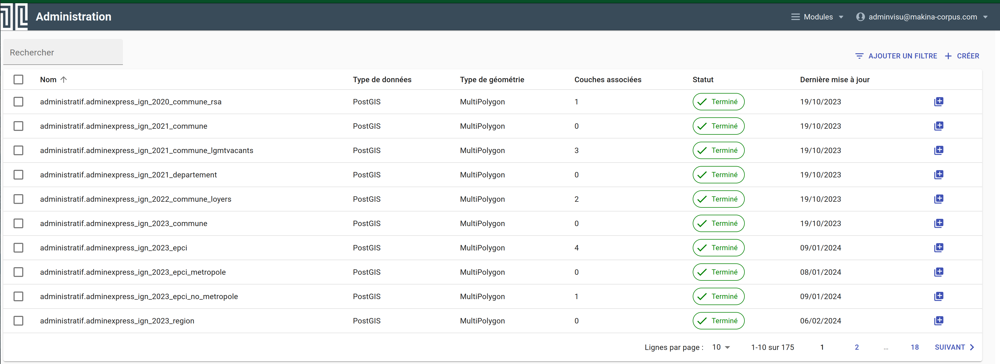
Tip
Pour retrouver plus facilement une source de données dans la liste, vous avez la possibilité d’utiliser la barre de recherche ou d’ajouter un filtre pour filtrer par type de données, type de géométrie, statut ou rapport d’importation.
Toutes les colonnes de la liste des sources de données sont triables dans l’ordre ascendant / descendant :
Nom
Type de données
Type de géométrie
Couches associées
Statut
Dernière mise à jour
Créer une source de données¶
Pour ajouter une nouvelle source, cliquez sur le bouton CRÉER.
Les types de sources de données supportés actuellement par l’application sont :
les fichiers GeoJSON
les fichiers Shapefile
les requêtes PostGIS
les fichiers CSV contenant des coordonnées géographiques
les flux WMS/WMTS
Note
Une fois la source de données enregistrée, il n’est pas possible de modifier son type.
Les types de géométries supportés par l’application sont les suivants :
PointLinestringPolygonMultiPointMultiLinestringMultiPolygonGeometryCollection
Lors de la déclaration de la source, il est possible d’ajouter un ou plusieurs groupes d’utilisateurs, De cette façon, seuls les utilisateurs faisant partie des groupes affectés à la source seront en mesure de visualiser les données.
Note
Le nom d’une source de données doit être unique, si ce n’est pas le cas l’enregistrement échouera.
Toutes les données intégrées à l’application doivent a minima posséder un champ d’identifiant unique et une géométrie.
Import de fichiers¶
Une source de données peut être créée par l’import d’un fichier GeoJSON, Shapefile ou CSV en déposant le fichier dans l’interface.
GeoJSON ou Shapefile¶
Les informations à renseigner à minima, lors de la création d’une nouvelle source GeoJSON ou Shapefile sont le nom, le type de données, le type de la géométrie et l’identifiant unique.
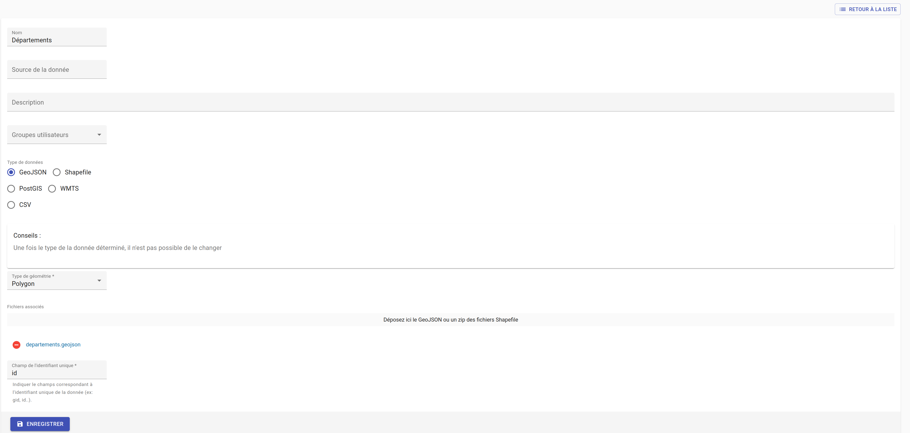
Note
Les fichiers GeoJSON doivent avoir le SRID 4326
Les fichiers Shapefile doivent être fournis sous la forme d’une archive zippée contenant l’ensemble des fichiers (
.shp,.prj,.shx,.dbf, etc).
CSV¶
Pour intégrer un fichier CSV, il faut que celui-ci comporte des coordonnées géographiques, dans une ou deux colonnes.
Les informations à renseigner à minima lors de la création d’une nouvelle source CSV sont le nom, le ou les champs de coordonnées, le système de coordonnées, le champ de l’identifiant unique, le séparateur de champ, le séparateur de texte, le séparateur décimal pour les coordonnées et le nombre de lignes à ignorer.
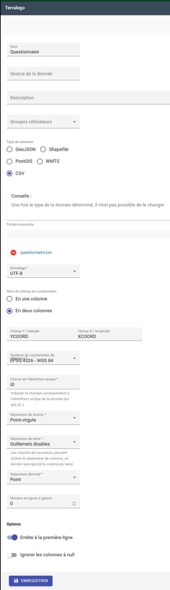
L’ option Entête à la première ligne activée permet de conserver les entêtes de colonnes qui se trouvent à la première ligne du fichier CSV.
Si l’option Ignorer les colonnes à null est activée, toutes les colonnes vides ne seront pas conservées.
Import via une requête PostGIS¶
Les informations à renseigner à minima lors de la création d’une nouvelle source PostGIS sont le nom, le type de géométrie, les paramètres de connexion à la base de données (hôte, port, nom bdd, nom utilisateur, mot de passe utilisateur), requête SQL, champ de géométrie, champ de l’identifiant unique.
Note
Attention à ne pas terminer la requête par un point virgule.
Tip
Il est possible de définir la fréquence de mise à jour automatique de la source (toutes les heures, quotidiennement…). La requête peut ainsi être exécutée régulièrement afin de mettre à jour les données avec le contenu de la base.
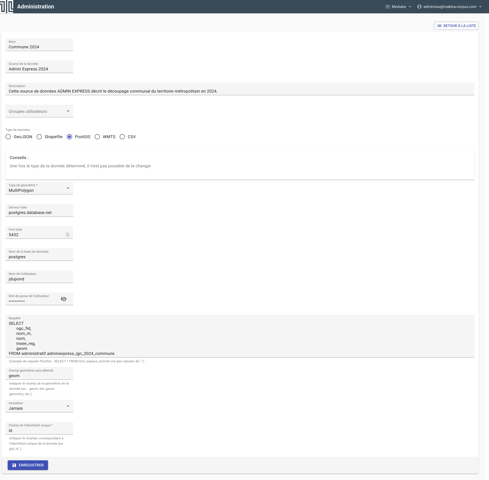
Note
Si une source de données dont la fréquence de mise à jour a été paramétrée sur Quotidienne, le déclenchement de la synchronisation ne se fera pas exactement 24h après.
L’heure d’exécution se fera 24h+25mn (redémarrage de l’outil qui regarde toutes les 25 mn s’il y a des changements) + date de fin de la dernière mise à jour.
Il peut donc y avoir un delta de 24h et 25mn au minimum entre chaque mise à jour de source de données.
Ce delta peut se rajouter d’autant plus s’il y a des mise à jour manuelles.
Géométries invalides |
|---|
Seules des géométries valides peuvent être importées dans l’application TerraVisu. |
|
Import via un flux WMS/WMTS¶
Les flux WMS/WMTS sont des protocoles de communication qui permettent d’obtenir des cartes de données géoréférencées à partir de différents serveurs de données (IGN, BRGM, etc.).
Les informations à renseigner à minima lors de la création d’une nouvelle source WMS/WMTS sont le nom et l’adresse.
Il est possible de renseigner les niveaux de zoom min et max auxquels les images du flux seront affichées dans le visualiseur cartographique.
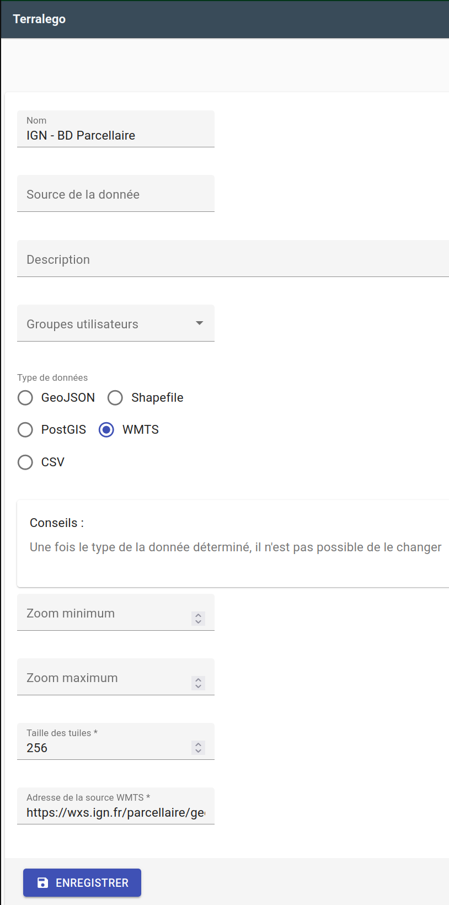
Enregistrer une source de données¶
Au moment de l’enregistrement de la source, les champs attributaires sont automatiquement déterminés et renseignés et quatres onglets sont créés :
DÉFINITION contient les informations principales de la source
DONNÉES contient la liste de tous les champs attributaires
RAPPORT D’IMPORTATION permet de remonter des informations concernant l’importation des données suite à l’actualisation
INFORMATIONS GÉNÉRALES affiche plusieurs informations utiles sur la source de données
Actualisation de la source de données¶
Une fois créée, la source de données doit être actualisée afin d’importer les données dans la base PostGIS du projet.
Statuts d’actualisation¶
Il existe cinq types de statuts relatifs à l’actualisation des sources :
A synchroniser: le statut de la source nouvellement créé, cela signifie que la source a besoin d’être actualisée pour être utilisée. Cliquez d’abord sur la source pour éditer son statut, puis sur ACTUALISER LES DONNÉES. Une fois revenu à la liste des source, vous pourrez constater que le statut est devenuEn coursouTerminé.En cours: la source de données est en cours d’actualisation.En attente: les sources mises en attente et traitées dans l’ordre de demande d’actualisation.Terminé: la source de données a bien été créé et vient d’être actualisée.Inutile: ce statut ne concerne que les sources WMS/WMTS car celles ci n’ont pas besoin d’être raffraichies.
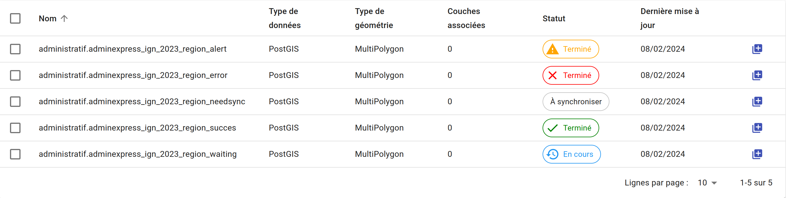
Note
Lors de la mise à jour d’une source, dans la page d’édition, le bouton ACTUALISER LES DONNÉES est grisé pour éviter de relancer la synchronisation plusieurs fois.
Il est néanmoins possible de forcer la réactualisation d’une source de données en cliquant sur le bouton grisé.
Onglet DÉFINITION¶
Cet onglet comporte les mêmes informations que celles renseignées lors de la création de la source de données.
Onglet DONNÉES¶
Cet onglet présente plusieurs intérêts :
Renommer le nom du champ (sera utilisé dans les couches)
Changer le type de champ (integer, float, string, etc.)
Afficher un extrait des valeurs du champ
Onglet RAPPORT D’IMPORTATION¶
Au survol sur la vignette du statut d’une source, une infobulle apparait avec les informations du rapport d’importation.
{kind=link}
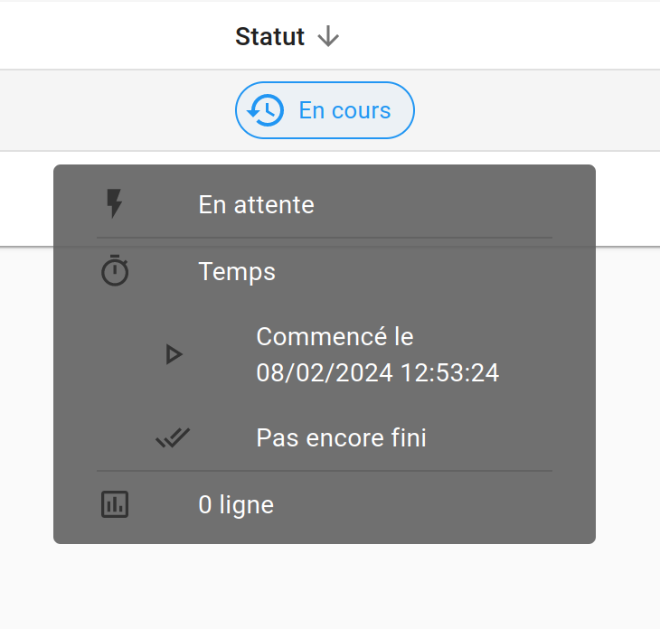
{kind=link}
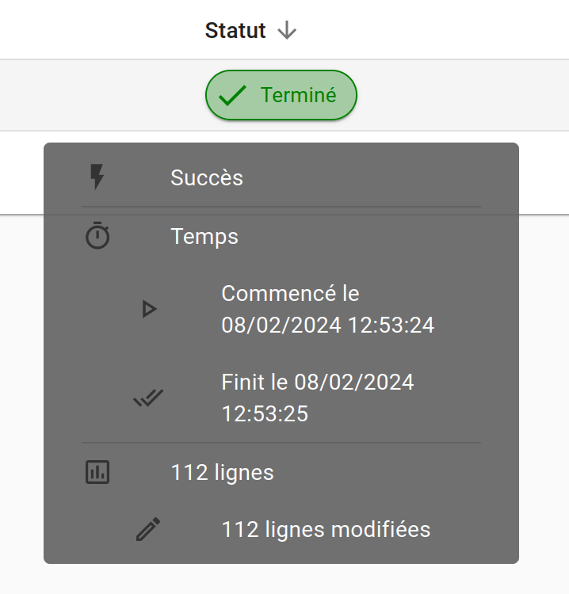
Il suffit de cliquer sur la vignette du statut pour être redirigé vers l’onglet RAPPORT D’IMPORTATION.
Il existe trois types de statuts relatifs au rapport d’importation des sources :
Succès: les données ont toutes correctement été importées au moment de l’actualisationErreur: aucune donnée n’a pu être importée au moment de l’actualisation (exemple : aucune donnée)Alerte: importation partielle des données car l’actualisation a rencontré une erreur (exemple : géométries invalides, mauvais typage de colonne)
Le rapport d’importation comporte plusieurs informations utiles comme :
StatutCommencée àFinie àRapport globalNombre total de lignes traitéesErreursNombre de lignes ajoutéesNombre de lignes modifiéesNombre de lignes supprimées
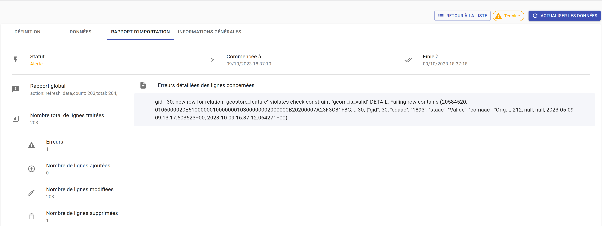
Onglet INFORMATIONS GÉNÉRALES¶
Cet onglet donne des informations utiles sur :
La date de création de la source de donnée (automatique)
La date de modification de la source de données (automatique)
La description (à renseigner dans l’onglet DÉFINITION)
Les crédits (à renseigner dans l’onglet DÉFINITION)
L’auteur de la source de données (automatique à partir du nom de l’utilisateur à l’origine de la source)
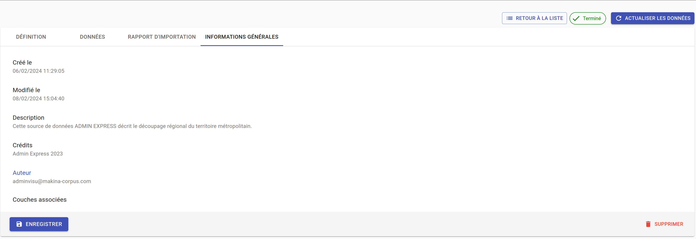
Modifier une source de données¶
L’onglet DONNÉES contient l’ensemble des champs attributaires de la source.
L’outil détecte automatiquement les types de chaque champ mais il peut arriver qu’il soit mal reconnu. Dans ce cas là, il est possible de le modifier dans la liste du type de chaque champ.
Les types gérés par l’application sont les suivants :
StringIntegerFloatBooleanUndefinedDate
Note
Lorsqu’un champ est de type Undefined, cela signifie que l’outil n’a pas réussit à l’identifier. A ce moment là il faut lui assigner le bon type dans la liste déroulante.
Un extrait des valeurs pour chaque champ est fournit afin d’avoir un aperçu des données.
Le libellé de chaque champ est modifiable de façon à le rendre plus lisible qu’une variable brut. Celui-ci sera utilisé lors de la configuration des couches.
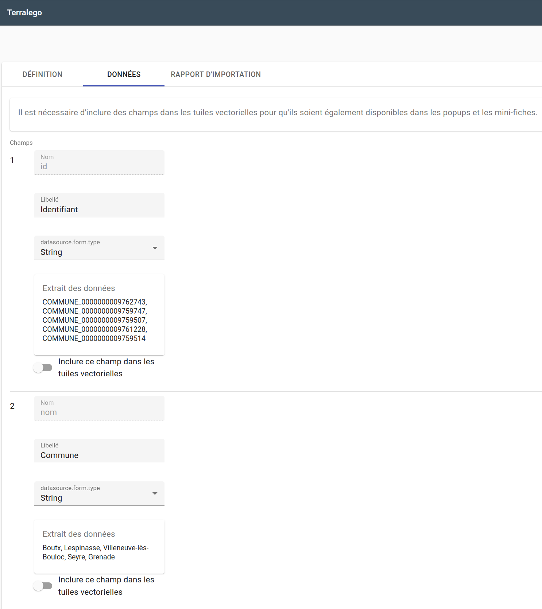
Dupliquer une source de données¶
Cela peut être particulièrement intéressant pour les sources PostGIS qui possèdent les mêmes paramètres de connexion à la base de données.
Si la duplication est réalisée sur une source Shapefile/GeoJSON/CSV, il est nécessaire de réimporter le fichier de données.
Pour dupliquer une source de données cliquez sur le bouton + depuis la liste des sources.
Note
Assurez vous de renommer la source car le nom d’une source de données doit être unique.
Supprimer une source de données¶
Pouvoir supprimer une source de données nécessite de s’assurer qu’elle n’est pas utilisée par aucune couche. Si ce n’est pas le cas, la suppression ne pourra pas être effectuée.
Pour supprimer une source, vous avez deux façons de procéder :
depuis la liste, cliquez sur la couche et en bas de la page cliquez sur le bouton SUPPRIMER.
dans la liste, cochez la source et cliquez sur le bouton SUPPRIMER.
Note
Toute suppression est définitive.
Liste des couches¶
Une fois les sources de données déclarées, l’utilisateur peut créer les couches qui en découlent.
Pour afficher l’ensemble des couches cliquez sur Liste des couches.
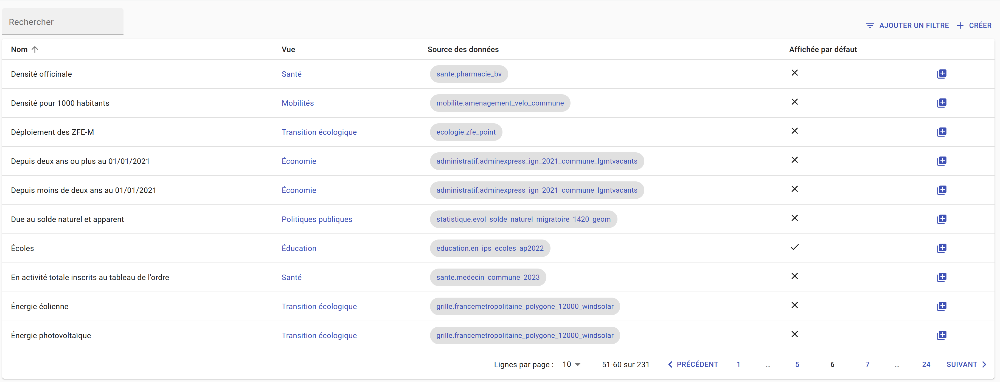
Tip
Pour retrouver plus facilement une couche dans la liste, vous avez la possibilité d’utiliser la barre de recherche ou d’ajouter un filtre pour filtrer par source de données, vue, affichée par défaut(oui/non), table attributaire affichée(oui/non), fenêtre au survol(oui/non), mini-fiche (oui/non).
Toutes les colonnes de la liste des sources de données sont triables dans l’ordre ascendant / descendant :
Nom
Vue
Source des données
Affichée par défaut
Créer une couche¶
La configuration des couches permet de personnaliser de manière très approfondie les possibilités d’interaction au sein d’une couche :
La fonction de recherche
La description associée
La représentation cartographique
La légende associée aux styles cartographiques affichés
L’affichage de popups associés aux données
L’affichage de fiches informatives associés aux données
La gestion d’outils de filtrage des données
La gestion de la table attributaire
La gestion d’un outil de synthèse
L’affichage de contenus provenant d’applications externes
Pour créer une nouvelle couche, cliquez sur le bouton CRÉER.
Une page s’ouvre avec différents onglets à renseigner.
Onglet DÉFINITION¶
Les informations à renseigner à minima lors de la définition de la couche sont le nom et la source de données.
A la différence des sources qui doivent avoir des noms uniques, il est possible d’avoir plusieurs couches avec le même nom.
Il faut ensuite sélectionner une source de données dans la liste. Chaque couche est associée à une source de données. Il est possible d’en filtrer le contenu en ajoutant une condition de sélection des données à partir de la liste des champs disponibles fournie (voir ci-dessous).
Le Champ principal permet d’activer la fonction de recherche dans le visualiseur qui retournera les résultats en fonction de ce champ.
Si l’option Affichée par défaut est activée, la couche sera activée dès l’ouverture de la vue à laquelle elle est associée dans le visualiseur cartographique.
Enfin, la partie Description permet d’ajouter du contenu informatif (textes, images, etc) sur cette couche. Ce texte peut être mis à disposition de l’utilisateur dans les vues classiques et de storytelling.
A ce stade, il est possible d’enregistrer la couche telle quelle et de l’afficher dans le visualiseur cartographique. Une représentation par défaut est appliquée à la couche, ce qui permet de la visualiser.
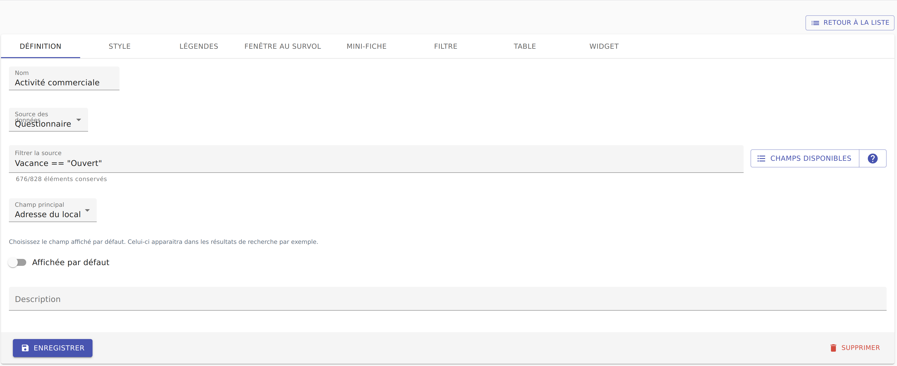
Filtrage de source¶
L’intérêt principal du filtrage de source est qu’il permet de créer de multiple couches à partir de la même source de données.
Le langage de filtrage, Pivot QL, est très proche du SQL et une aide 🛈 permet d’obtenir des exemples avec des cas de figures parlants.
Pour aider à l’écriture de la requête de filtrage, il peut être intéressant de consulter la liste des champs disponibles afin de ne pas faire d’erreur de nommage.
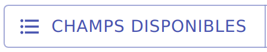
Pour finir, si la requête est syntaxiquement incorrecte ou qu’un nom de champ est mal orthographié alors un message d’erreur vient avertir l’utilisateur.
Le nombre d’éléments retournés par le filtre est une aide précieuse pour savoir si la requête est bonne.
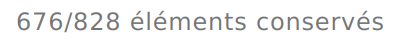
Le filtre appliqué à la source de données dans la couche est immédiatement répercuté dans la fenêtre de filtre côté interface du visualiseur cartographique.
Métadonnées¶
Il est possible de renseigner un texte descriptif lié à une couche.
Ce texte sera affiché dans les outils de la couche (icône i).
Il peut servir à préciser la méthodologie utilisée, la provenance des données, leur millésime, le fournisseur, le créateur, etc.
L’éditeur de texte enrichi permet :
de mettre en forme du texte (gras, italique, souligné, barré) ;
de créer des listes à puces ou numérotées ;
d’insérer un lien hypertexte.
Pour ajouter un média (image, vidéo), il est nécessaire de basculer sur l’éditeur HTML.
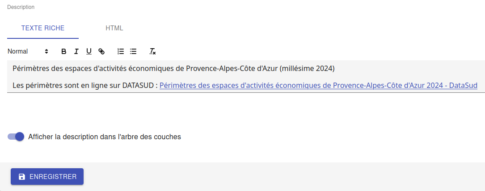
Note
Ne pas oublier d’activer l’option “Activer la description dans l’arbre des couches”
Onglet ICÔNES¶
Il est possible d’afficher ses propres pictogrammes sur une couche. Ils pourront servir d’icônes ou de motifs sur la carte créée.
Pour cela il suffit de cliquer sur le bouton AJOUTER, d’importer son image (png/jpeg) et de la nommer dans le champ Nom.
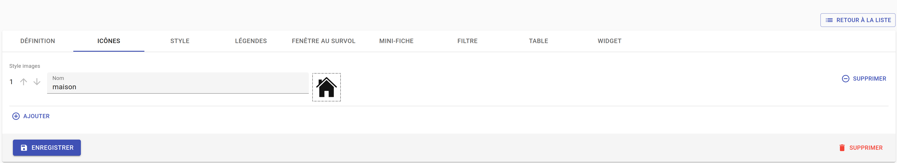
Il est possible de modifier la couleur de fond de l’image en utilisant l’outil COMPOSER. Pour cela il est nécessaire que l’image ait été enregistrée au préalable afin qu’elle soit disponible dans la liste.
Pour enregistrer l’image, enregistrez la couche.
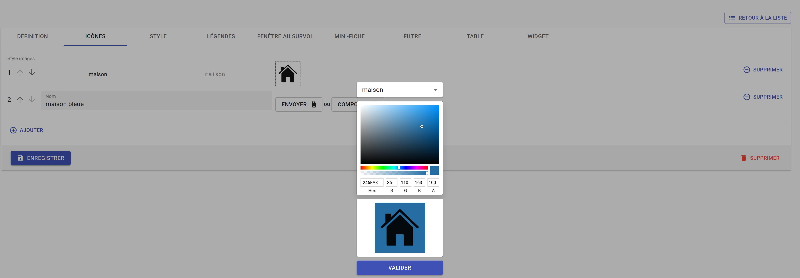
Onglet STYLE¶
La conception du style permet de donner du sens à une carte en transmettant une information qui doit être la plus efficace et compréhensible possible.
Parmi les nombreux styles que l’on peut réaliser, voici les plus courants :
Des styles simples sans analyse : polygones, lignes, points.
Des analyses paramétrées permettant de représenter une variable en particulier :
Cartes choroplèthes (analyse discrète)
Carte thématiques (catégorisation)
Points avec cercles proportionnels (analyse continue)
Point avec iconographie (catégorisation)
Affichage de texte
Des analyses bivariées permettant de représenter deux variables en même temps en faisant varier deux caractéristiques du style de la même représentation géographique.
Des représentations mettant en jeux plusieurs couches (polygone + centroide par exemple) du type couche principale + couche de décoration.
Des représentations différentes en fonction du niveau de zoom.
Il existe deux modes possibles pour la conception du style : le mode avec assistant de style et le mode sans. Par défaut, le mode avec assistant est activé.
Dans ce manuel d’utilisation, nous nous concentrons principalement sur le mode avec assistant car celui ci s’adresse à un profil d’utilisateur non développeur.
Style simple¶
L’application identifie automatiquement le type de représentation possible en fonction de la géométrie de la source de données utilisée. Ainsi, au moment de la conception, un style simple par défaut est proposé à l’utilisateur.
Il est possible de modifier les couleurs par défaut en cliquant sur le carré coloré. Un sélecteur de couleur apparaît et vous permet d’en choisir une dans la palette chromatique ou de renseigner le code couleur en HTML ou RGBA.
Pour renseigner une valeur numérique (exemple le Diamètre pour une représentation Cercle), il suffit de cliquer sur la zone concernée et d’inscrire une valeur.
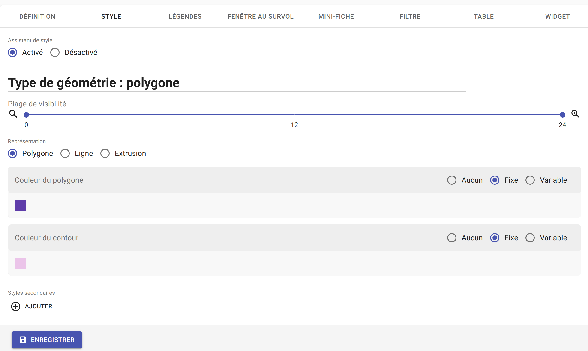
Les curseur de la plage de visibilité permettent de définir des niveaux de zoom d’apparition/disparition d’un style sur la carte (exemple : on affiche des zones du zoom 0 jusqu’au zoom 13 et à partir du zoom 13 on affiche des icônes).
Pour utiliser une icône existante dans un style simple, sélectionnez la représentation Icône et choisissez l’image que vous avez enregistré dans l’onglet ICÔNES.
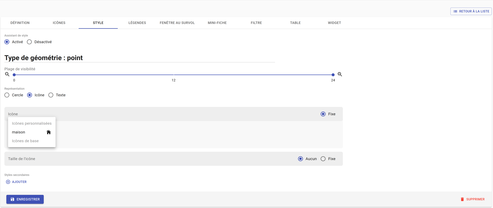
Style avec motif¶
Il est possible d’utiliser des motifs au lieu des couleurs pour remplir un polygone.
Création d’un motif La première étape est de créer le motif, dans l’onglet ICÔNES. Pour cela, il est nécessaire d’importer une image servant de base au motif (le motif est idéalement blanc et de taille 28 x 28 pixels). L’import d’image se fait via le bouton UPLOAD. Il est ensuite possible de colorer l’image précédemment importée dans l’application. Le bouton COMPOSE permet ce choix de couleur à appliquer sur le motif.
Utilisation d’un motif Actuellement les motifs ne sont pas gérés par l’assistant de style. Il est nécessaire de désactiver l’assistant pour utiliser les motifs via du code
Mapbox.Exemple :
{
"type": "fill",
"paint": {
"fill-pattern": "hachures-bleu"
},
"maxzoom": 24,
"minzoom": 0
}
Style avec une analyse¶
Choix du type de représentation
Polygone
Ligne
Extrusion (3D)
Cercle
Icône
Texte
Diagrammes circulaires
Choix du de la caractéristique à faire varier
Couleur fond
Couleur contour
Diamètre
Épaisseur
Couleur texte
Taille texte
etc.
Choix de la variable à représenter
Choix du type d’analyse
Si la variable est un nombre (type Float/Integer)
Discrétisation (méthodes Jenks, Quantiles, Intervalles égaux)
Interpolation
Catégorisation
Diagrammes circulaires
Si la variable est un texte (type String)
Catégorisation
Afin de ne pas égarer l’utilisateur dans les nombreux choix du type de représentation, ce dernier sera restreint en fonction du type géométrique de la source de données utilisée par la couche. Par exemple, à une source de type Polygon sera proposé uniquement les types de représentation Polygone, Ligne, Extrusion.
Le choix de la caractéristique à faire varier découlera automatiquement du type de représentation choisi précédemment. Par exemple, pour une représentation Polygone, les caractéristiques à faire varier seront Couleur du polygone et Couleur du contour.
Il est à noter que toutes les caractéristiques ne sont pas variables car n’apportant pas d’intérêt : par exemple l’épaisseur du contour de la représentation Cercle n’est pas variable, uniquement fixe.
Le choix de la variable à représenter se fait à l’aide d’une liste déroulante. La variable se présente ainsi : le label (éditable), le nom de la variable, le type. Le type de la variable choisie (String, Integer, Float..) conditionne les possibilités du type d’analyse.
Le choix du type d’analyse constitue la dernière étape. Le type d’analyse Interpolation n’est disponible que pour faire varier les caractéristiques Diamètre ou``Épaisseur``, c’est à dire une taille.
Lors de la conception d’un style avec une analyse, il est possible d’activer l’option Générer la légende associée pour que la légende soit exactement conforme au style représenté.
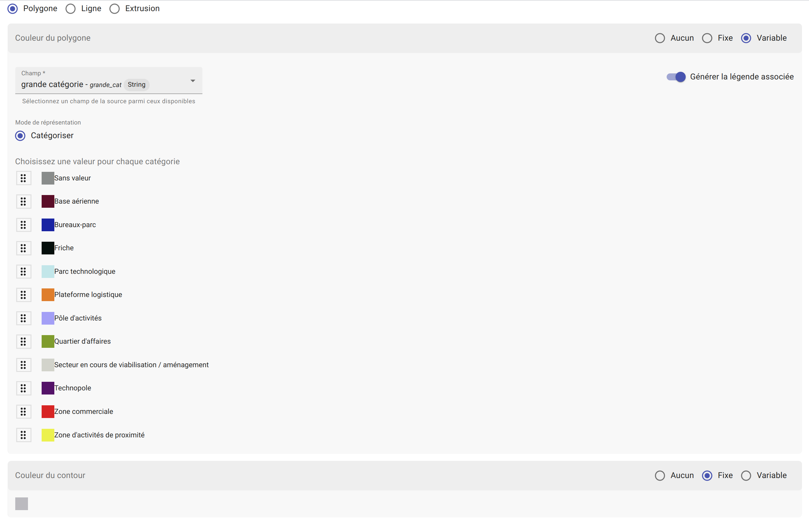
Exemples de styles Mapbox avancés¶
Catégorisation
Fallback value (valeur par défaut)
{
"type": "fill",
"paint": {
"fill-color": [
"case",
[
"has",
"nb_log_ind_pour_mille"
],
[
"step",
[
"get",
"nb_log_ind_pour_mille"
],
"#fde725",
0.1,
"#5dc963",
1.1,
"#21908d",
3.1,
"#3b528b",
7.1,
"#440154",
15.1,
"#CCC"
],
"#CCC"
],
"fill-outline-color": "#a7c2e8"
},
"maxzoom": 24,
"minzoom": 0
}
Variation simple (icones en fonction d’un champ) + étiquettes en fonction d’un champ
{
"type": "symbol",
"paint": {
"text-color": "hsl(352, 100%, 15%)"
},
"layout": {
"icon-size": 1,
"text-font": [
"Arial Unicode MS Bold"
],
"text-size": 8,
"icon-image": [
"match",
[
"get",
"cep_nature"
],
"ESU",
"point-vert",
"ESO",
"point-noir",
"EMI",
"point-marron",
""
],
"text-field": "{cep_nom}",
"text-radial-offset": 2,
"text-variable-anchor": [
"top",
"bottom",
"left",
"right"
]
},
"maxzoom": 24,
"minzoom": 0
}
Variation simple (couleur des points en fonction d’un champ) + clusters colorés en fonction du nombre de points
{
"type": "circle",
"paint": {
"circle-color": [
"case",
[
"has",
"secteuractivite"
],
[
"match",
[
"get",
"secteuractivite"
],
"Alimentaire",
"hsla(210, 50%, 40%, 0.8)",
"Automobiles, motos",
"hsla(0, 0%, 80%, 0.8)",
"Hôtels, cafés, restaurants",
"hsla(180, 50%, 60%, 0.8)",
"Culture, loisirs",
"hsla(180, 50%, 40%, 0.8)",
"Divers",
"hsla(0, 20%, 50%, 0.8)",
"Équipement de la maison",
"hsla(60, 50%, 60%, 0.8)",
"Équipement de la personne",
"hsla(300, 33%, 30%, 0.8)",
"Grand magasin",
"#c7843d",
"Hygiène, santé, beauté",
"hsla(300, 33%, 70%, 0.8)",
"Services à la personne",
"hsla(0, 100%, 90%, 0.8)",
"Services à vitrine",
"hsla(30, 100%, 60%, 0.8)",
"#CCC"
],
"#CCC"
],
"circle-radius": 7,
"circle-stroke-color": "hsl(0, 0%, 95%)",
"circle-stroke-width": 1
},
"cluster": {
"font": {
"color": "#ffffff"
},
"sizes": [
5,
10,
15,
20,
22,
25
],
"steps": [
2,
5,
10,
50,
80
],
"border": 4,
"colors": [
"#b8e295",
"#8dcf82",
"#64bc6e",
"#3ba859",
"#1c8a47",
"#006837"
],
"radius": 50
},
"maxzoom": 24,
"minzoom": 0
}
Variation double : couleur des lignes en fonction d’un champ + taille des lignes en fonction en fonction d’un champ
{
"type": "line",
"paint": {
"line-color": [
"match",
[
"get",
"class_adm"
],
"Autoroute",
"#bb1e2a",
"Départementale",
"#487b00",
"Nationale",
"#487bb6",
"#000000"
],
"line-width": [
"match",
[
"get",
"class_adm"
],
"Autoroute",
3,
"Départementale",
2,
"Nationale",
1,
0
]
},
"maxzoom": 24,
"minzoom": 9
}
Variation simple (couleur du polygone en fonction d’un champ) + ordre d’affichage des géométries en fonction d’un champ
{
"type": "fill",
"paint": {
"fill-color": [
"match",
[
"get",
"buffer"
],
"1000",
"#e47e1c",
"250",
"#e41a1c",
"#000000"
],
"fill-outline-color": "transparent"
},
"layout": {
"fill-sort-key": [
"case",
[
"==",
[
"get",
"buffer"
],
"1000"
],
0,
[
"==",
[
"get",
"buffer"
],
"250"
],
1,
0
]
},
"maxzoom": 24,
"minzoom": 0
}
Filtres
Filtre simple (une condition)
{
"type": "fill",
"paint": {
"fill-color": "hsl(140, 92%, 24%)",
"fill-outline-color": "hsl(0, 0%, 100%)"
},
"filter": [
"==",
"nouvelle_culture",
"Oui"
],
"maxzoom": 24,
"minzoom": 0
}
Filtre “et” (les conditions se cumulent)
{
"type": "fill",
"paint": {
"fill-color": "hsl(140, 92%, 24%)",
"fill-outline-color": "hsl(0, 0%, 100%)"
},
"filter": [
"all",
[
"==",
"nouvelle_culture",
"Oui"
],
[
">=",
"evol_2021_surf",
"0"
]
],
"maxzoom": 24,
"minzoom": 0
}
Ajouter un style secondaire¶
Une couche peut utiliser plusieurs styles. Le style principal utilise les données de la source utilisée par la couche, en revanche, le style secondaire peut faire appel à une source de données différente.
Le style secondaire doit être vu comme un élément de décoration sur la carte. De cette manière, aucune interaction ne sera possible avec les données du style secondaire (info-bulle, mini-fiche, filtre, etc.)
Exemple concret : Dans le cas d’une carte des communes, il pourra être intéressant de rajouter les étiquettes des noms au centre des communes. Pour se faire, on aura besoin de créer un style secondaire faisant appel à la source de données des centroides des communes pour pouvoir ajouter les étiquettes.
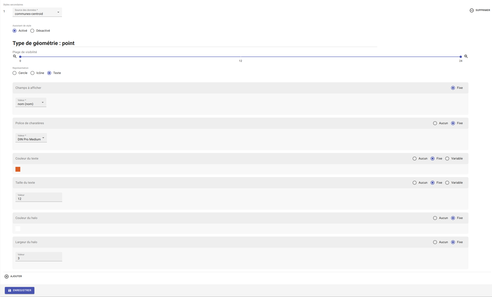
Style sans assistant¶
Il est possible d’aller plus loin dans la conception d’un style en désactivant le mode assistant. Ce mode s’adresse à des utilisateurs développeurs car il faut rédiger le code en JSON, en suivant la spécification Mapbox.
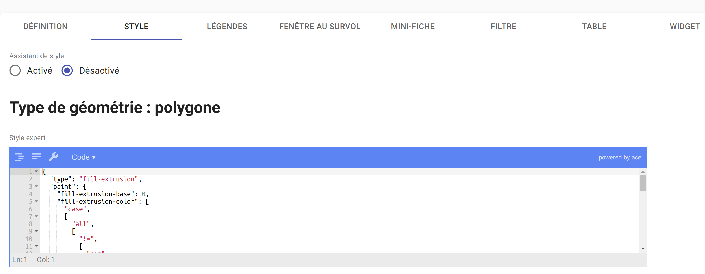
Onglet LÉGENDES¶
La légende est un des éléments essentiels de la carte. Elle doit être claire, facilement compréhensible et doit s’adapter aux éléments affichés sur la carte.
Voici les typologies de légende :
Légende avec carrés pour représenter des polygones
Légende avec cercles pour représenter des points
Légende avec lignes pour représenter les lignes
Légende avec icônes pour représenter les pictogrammes ou motifs
On peut faire varier :
La couleur de fond pour les carrés et le cercles
La couleur de la ligne pour les carrés, les cercles et les lignes
La taille pour les carrés et les cercles
L’épaisseur de ligne pour les carrés, les cercles et les lignes
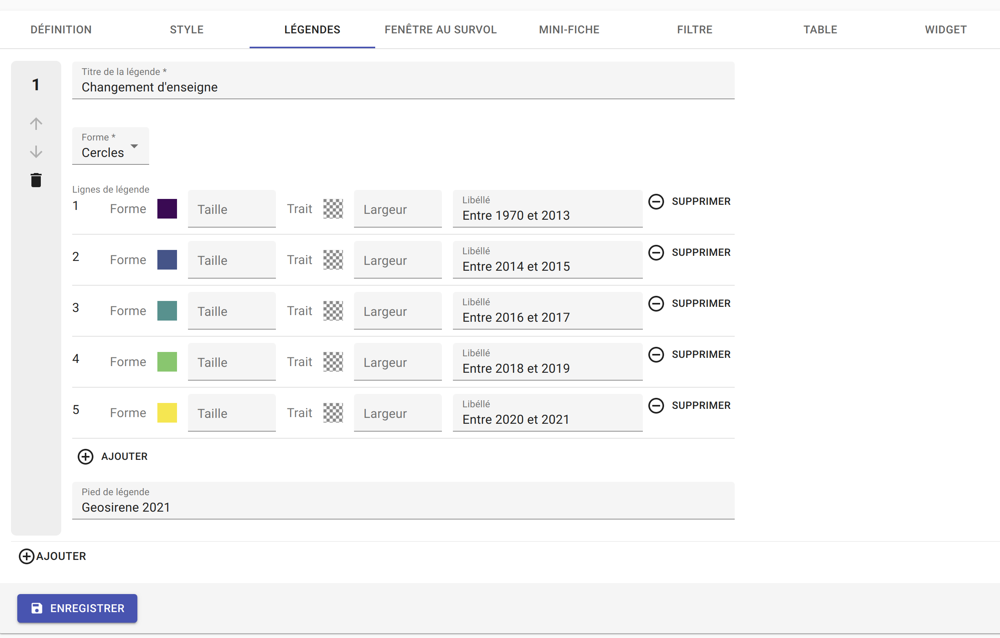
Si elle est générée depuis l’onglet STYLE, alors elle se met en lien automatiquement avec le style de la couche et prend en compte la typologie de géométrie affichée.
Il n’est pas possible de modifier une légende qui a été générée. Seuls le titre et le pied de légende sont éditables.
Si la légende générée ne vous convient pas, il faut désactiver l’option Générer la légende associée dans l’onglet STYLE pour la caractéristique concernée (exemple Couleur du polygone). De cette façon, vous pourrez créer manuellement la légende souhaitée.
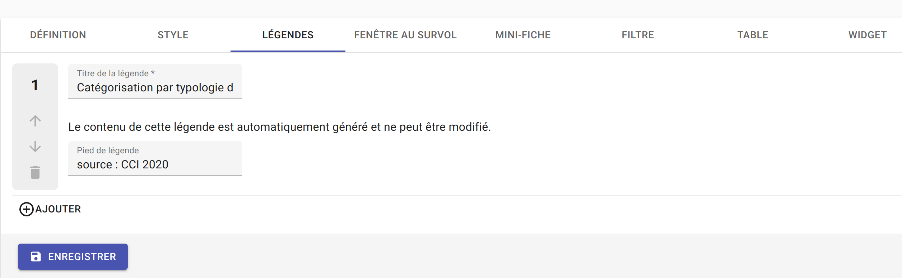
Onglet FENÊTRE AU SURVOL¶
La fenêtre au survol ou info-bulle est un message contextuel apparaissant en surimpression au survol de la souris sur les éléments de la couche. Le contenu du message s’adapte dynamiquement en fonction de l’objet survolé. Celle-ci n’est pas active par défaut.
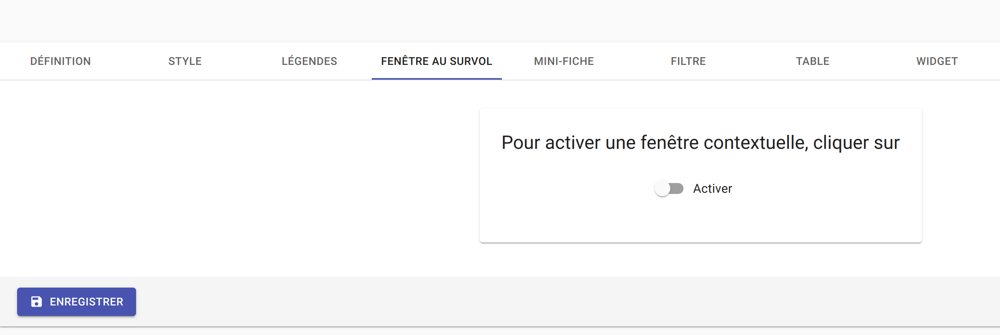
Une fois activée, la configuration de la fenêtre est facilitée grâce à un assistant qui permet d’ajouter les éléments de contenus et de définir une plage de zoom.
Si le champ principal a été définit dans l’onglet DÉFINITION, alors ce dernier sera aussi utilisé comme titre de l’info-bulle.
En cas de valeur nulle sur un champ, il est possible de définir une valeur par défaut. De même, l’outil permet de rajouter du texte en préfixe et suffixe de la valeur du champ choisi.
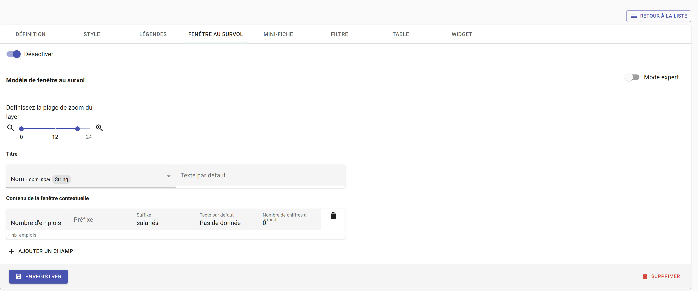
Lorsque le label d’un champ est renommé à un endroit de l’application, il est renommé partout ailleurs.
Le Mode expert permet d’aller plus loin dans le paramétrage de l’info-bulle en codant le contenu en Nunjucks.
Le code est généré à partir de ce qui existe dans le mode avec assistant, en revanche l’inverse n’est pas vrai. C’est à dire que le mode avec assistant n’est pas synchronisé avec le Mode expert.
Ce mode avancé s’adresse à des utilisateurs développeurs. Il peut être intéressant de l’utiliser pour définir des conditions if ou elseif.
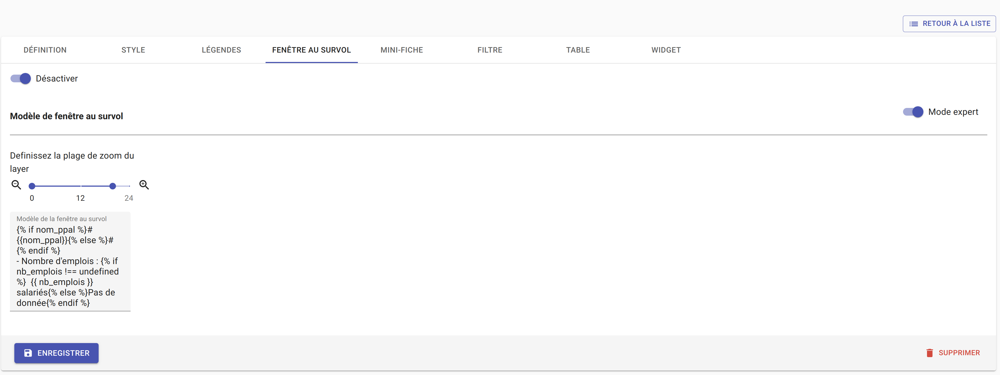
Onglet MINI-FICHE¶
La mini-fiche est une fiche structurée présentant des informations associées à un objet de la couche. Celle-ci s’ouvre au clic sur l’objet en question.
Mode simple¶
La mini-fiche n’est pas active par défaut.
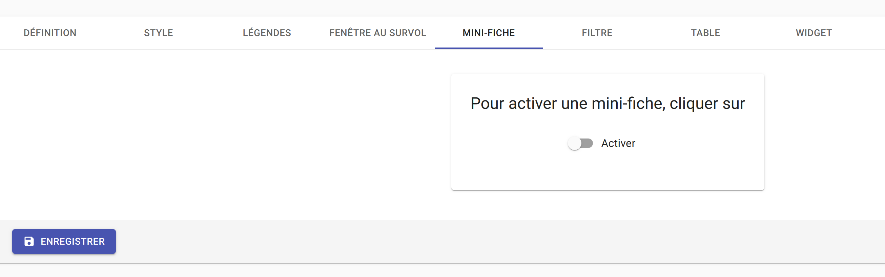
La mini-fiche fonctionne sur le même principe que celui de la fenêtre au survol. Si le champ principal a été définit dans l’onglet DÉFINITION, alors ce dernier sera aussi utilisé comme titre de la mini-fiche.
Il est possible de sélectionner une couleur de surbrillance pour les objets cliqués sur la carte au moment de l’affichage de la mini-fiche.
En cas de valeur nulle sur un champ, il est possible de définir une valeur par défaut.
De même, l’outil permet de rajouter du texte en préfixe et suffixe de la valeur du champ choisi.
A la différence de l’info-bulle, l’utilisateur peut ajouter des titres de section pour structurer les parties de la fiche.
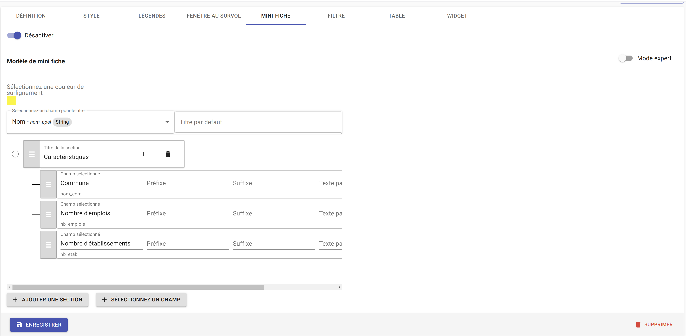
Lorsque le label d’un champ est renommé à un endroit de l’application, il est renommé partout ailleurs.
Mode expert¶
Le Mode expert permet d’aller plus loin dans le paramétrage de la fiche en codant le contenu en Nunjucks.
Le code est généré à partir de ce qui existe dans le mode avec assistant, en revanche l’inverse n’est pas vrai. C’est à dire que le mode avec assistant n’est pas synchronisé avec le Mode expert.
Ce mode avancé s’adresse à des utilisateurs développeurs. Il peut être intéressant de l’utiliser pour ajouter du texte coloré, des liens hypertexte ou des images.
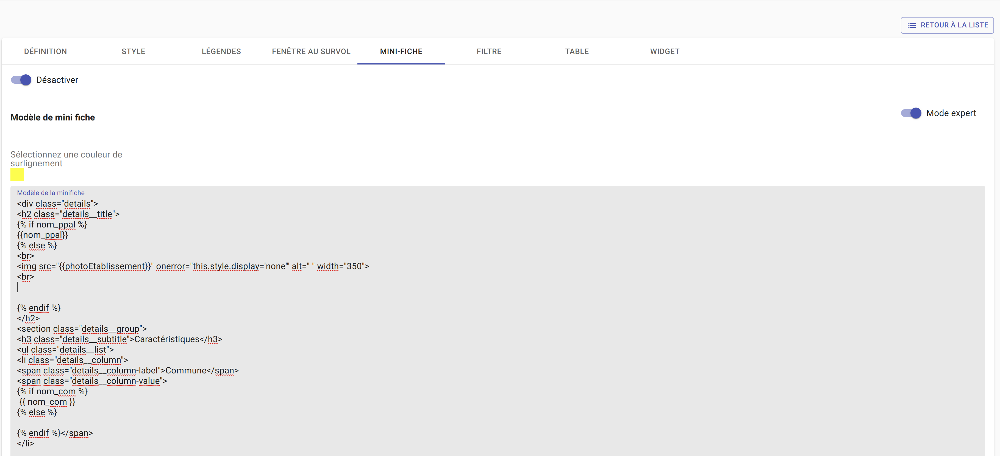
Comparaison d’entités¶
Il est possible de créer une URL permettant de comparer plusieurs entités.
Modèle d’URL :
https://fiches.sud-foncier-eco.fr/comparer?eae={{ids}}
Dans ce modèle, l’URL de comparaison est générée automatiquement et affichée dans le tableau lorsque plusieurs éléments sont sélectionnés.
Le paramètre {{ids}} doit être remplacé par la liste des identifiants des entités sélectionnées.
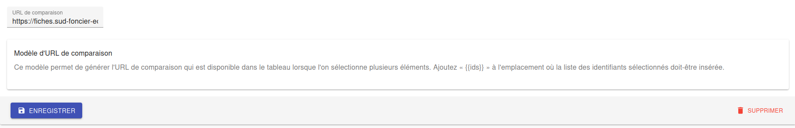
Onglet FILTRE¶
L’outil de filtre permet de restreindre les éléments sur la carte en fonction des valeurs de champs sélectionnées.
L’outil de filtre n’est pas actif par défaut.
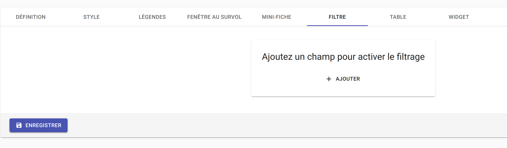
Pour ajouter un filtre sur la couche cliquez sur AJOUTER.
Plusieurs types de filtrage sont disponibles en fonction des types de champs :
Une seule valeur (texte)
Plusieurs valeurs (texte)
Une étendue de valeurs (numérique ou date)
Au niveau de l’affichage, il est possible de choisir:
Aucune valeur
Toutes les valeurs disponibles pour le champ
Une liste de valeurs
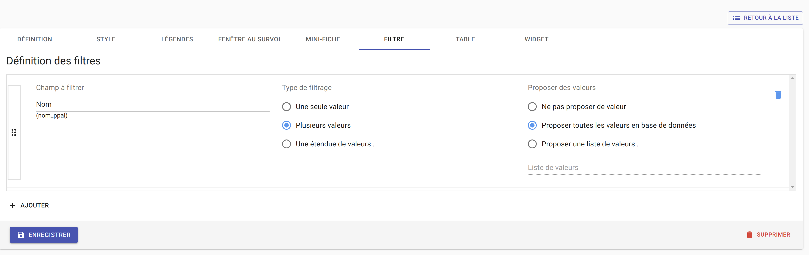
Il est possible de remonter/descendre les filtres dans l’ordre souhaité.
Onglet TABLE¶
La table attributaire permet d’avoir une vision tabulaire des données de la couche. Elle n’est pas activée par défaut.
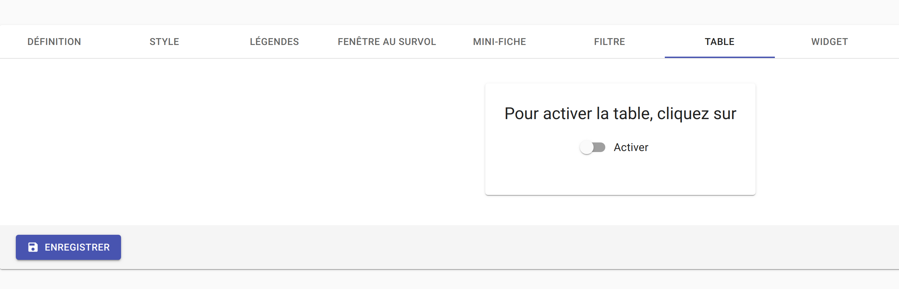
Une fois la table activée, l’utilisateur peut configurer l’affichage des champs et autoriser leur export au format xlsx.
Il est possible de remonter/descendre les champs dans l’ordre souhaité.
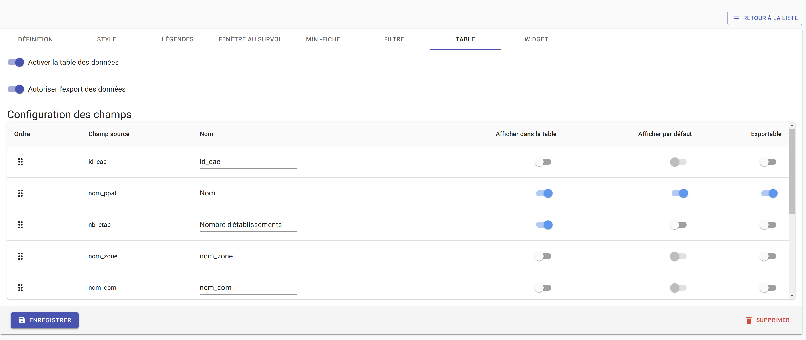
Onglet WIDGET¶
L’outil de widget permet de récapituler dans un tableau dynamique des indicateurs utiles à l’analyse de la couche.
Plusieurs widgets peuvent être créés par couche. L’icône et le libellé de chacun d’entre eux est personnalisable.
Trois types de calculs statistiques sont proposés :
le comptage du nombre d’éléments présents
la somme de leur valeur
la moyenne de leur valeur
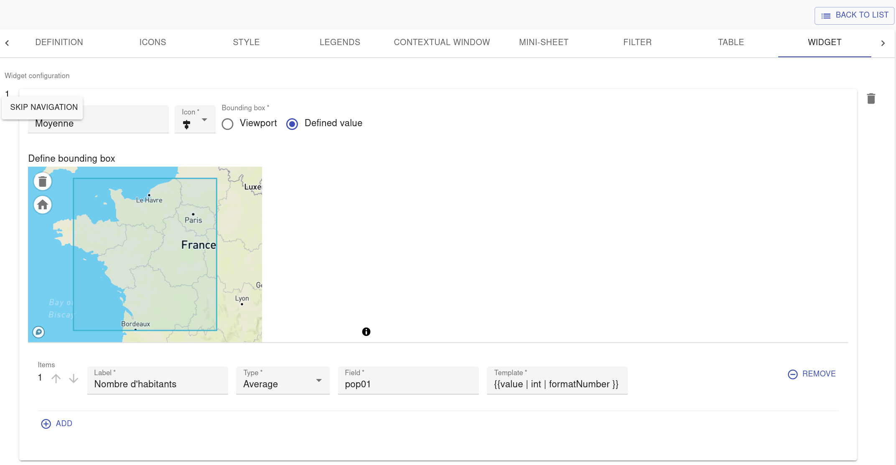
Il est possible de choisir si le résultat de ces calculs se réactualise en fonction des éléments qui se trouvent dans l’emprise spatiale, lors du zoom sur la carte, ou non.
Un champ de saisie avancée à destination des utilisateurs développeurs est également disponible. Il requiert l’écriture en JSON avec dans la clé “template” une chaîne de caractère contenant le code en Nunjucks du format de données attendu.
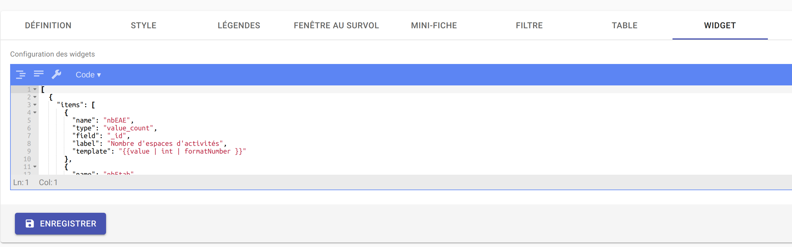
Onglet INCLUSIONS¶
Enfin, il est également possible d’associer à une couche des contenus provenant d’applications externes - par exemple, pour associer des graphiques aux couches cartographiques.
Pour cela, il suffit de renseigner :
l’icône représentative
un libellé correspondant
l’URL du contenu distant à mettre à disposition des utilisateurs de TerraVisu
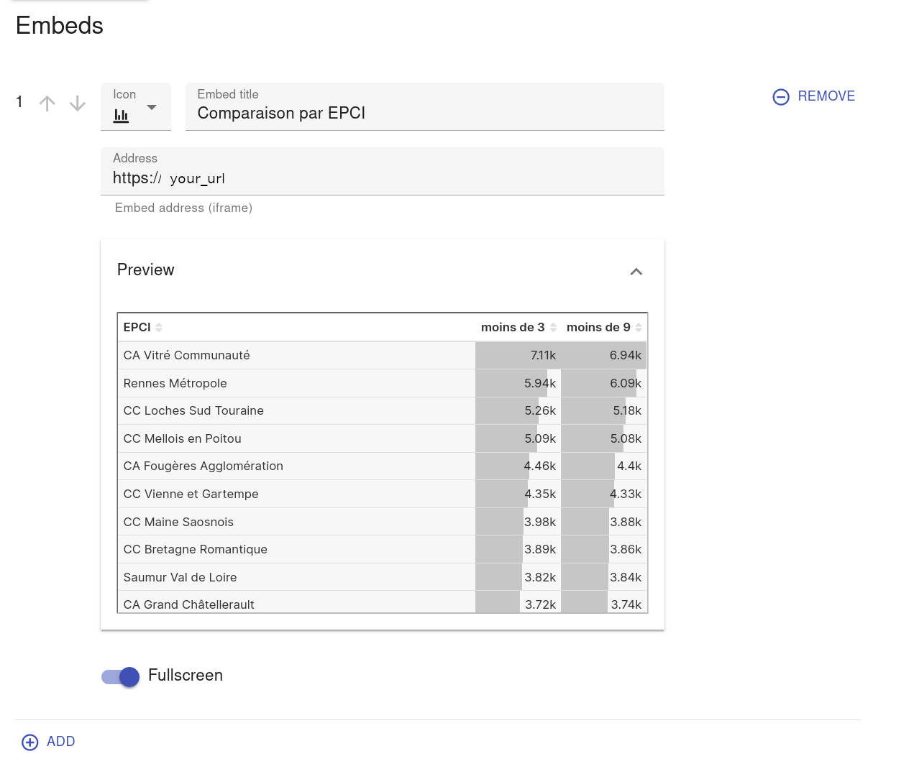
Modifier une couche¶
Pour modifier une couche existante, cliquez sur la couche dans la liste et effectuez vos changements.
Dupliquer une couche¶
La duplication d’une couche inclut la copie :
du style
de la légende
de l’infobulle
de la mini-fiche
du widget
Pour dupliquer une couche cliquez sur le bouton DUPLIQUER depuis la liste des couches.
Un message indique à l’utilisateur que la couche a bien été dupliquée.
Supprimer une couche¶
Pouvoir supprimer une source de données nécessite de s’assurer qu’elle n’est utilisée dans aucun vue. Si ce n’est pas le cas, la suppression ne pourra pas être effectuée.
Pour supprimer une couche, vous avez deux façons de procéder :
dans la liste, cliquez sur la vue et en bas de la page cliquez sur le bouton SUPPRIMER
dans la liste, cochez la couche et cliquez sur le bouton SUPPRIMER
Note
Toute suppression est définitive.
Liste des vues¶
La configuration des menus d’accès aux couches de données s’appelle les vues.
Il s’agit de la dernière étape à réaliser (après la création de la source, puis création de la couche) pour visualiser ses données.
Pour afficher l’ensemble des vues cliquez sur Liste des vues.
Vous arrivez sur une page présentant la liste de toutes les vues déclarées.
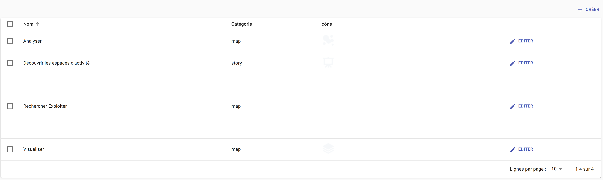
Créer une vue¶
Pour ajouter une nouvelle vue cliquez sur le bouton CRÉER.
Les informations à renseigner à minima lors de la création d’une nouvelle vue sont le nom, le type de vue, le classement et l’arbre des couches.
Il existe deux types de vues :
Carte : les couches sont affichés dans une arborescence composée de groupes
Storytelling : les couches sont affichés à droite d’une description (analyse de carte, chiffre clés..) et l’utilisateur les fait défiler dans l’ordre dans lesquelles elles sont ordonnées dans l’arbre des couches.
Le classement permet d’affecter à la vue une position par rapport aux autres (exemple : 1ere position, deuxième position..). Il est possible de créer autant de vues que nécessaire mais il ne peut pas y avoir plus de 10 vues affichées dans le visualiseur cartographique.
Il est possible de définir une emprise géographique différente de l’emprise par défaut du visualiseur cartographique (exemple : Centre ville de Thionville). Pour cela, il suffit de dessiner la zone à afficher à l’aide de l’outil de dessin.
S’il a définit au préalable des fonds de carte dans le module Liste des fonds de carte, l’utilisateur peut choisir de les utiliser dans une vue. Si il ne le fait pas, c’est le fond de carte par défaut (Mapbox Monochrome Light) qui sera utilisé.
Une icône par défaut est appliquée à la vue si l’utilisateur ne lui en choisis pas. Sa couleur est blanche afin que l’icône se démarque bien sur le menu des vues dans le visualiseur cartographique. Le format supporté par l’outil est le png.
Arbre des couches¶
Une couche appartient obligatoirement à un groupe.
Pour ajouter un groupe cliquez sur le bouton CRÉER UN GROUPE.
Pour ajouter une couche à un groupe cliquez sur le + et choisissez la dans la liste.
Vous pouvez construire votre arbre en ajoutant, déplaçant, imbriquant les éléments.
A partir d’un groupe, en cliquant sur les trois petits points verticaux vous avez la possibilité de :
Ajouter une couche
Ajouter un sous-groupe
Paramétrer le mode de sélection des couches : exclusif, inclusif ou par variables
Supprimer un groupe
Note
Une couche ne peut être ajoutée qu’à une seule vue à la fois.
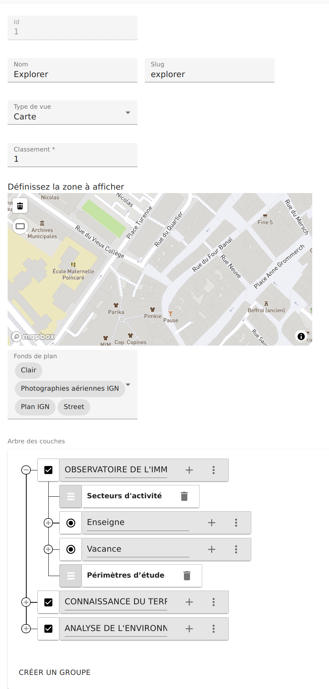
L’enregistrement de la vue aura pour effet immédiat de rajouter automatiquement l’ensemble des éléments de l’arbre des couches dans le visualiseur cartographique.
Pour modifier une vue existante, cliquez sur la vue dans la liste et effectuez vos changements.
Sélection des couches par variables¶
Le mode de sélection de couches dit “par variables” permet de rassembler plusieurs couches portant sur un même indicateur, dont la valeur est fonction de combinaisons de variables.
Ce mécanisme est particulièrement utile pour permettre la sélection du millésime de données ainsi que de l’échelle spatiale utilisée.
Pour pouvoir actionner ce mode de sélection, il est nécessaire d’avoir préalablement défini une couche par combinaison de valeurs voulues pour les variables en jeu.
Exemple avec deux variables :
Variables et valeurs associées
Zone géographique : Département, Région
Année : 2020, 2050
Couches nécessaires (sans contrainte sur le nom)
Couche Département 2020
Couche Département 2050
Couche Région 2020
Couche Région 2050
Dans la page d’édition d’une vue, vous aurez alors accès au menu suivant permettant la création d’un nouveau groupe.
Créer un nouveau groupe, le nommer et afficher ses paramètres :
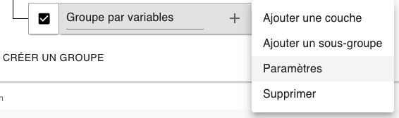
Sélectionner le mode de sélection de couches “par variables” et renseigner le nom des variables souhaitées :
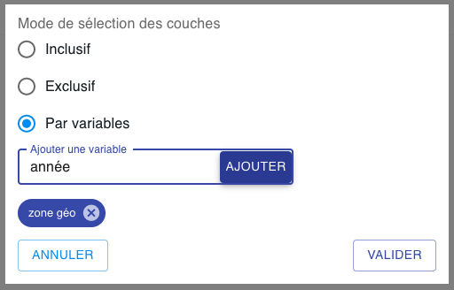
Ajouter une couche au groupe. C’est lors de cette étape que les valeurs des différentes variables sont définies.
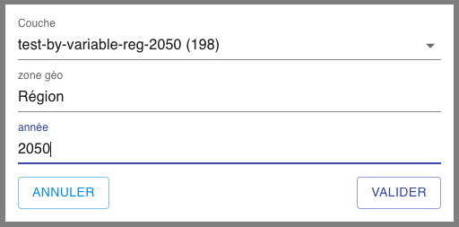
Affecter une couche à chaque combinaison :
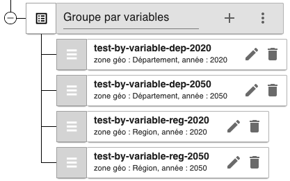
Le groupe s’affiche alors dans l’arbre des couches et comporte un sélecteur de valeurs quand il est actif.
Dans le cas où la couche correspondant à une combinaison n’a pas été définie, une erreur s’affiche lors du changement de valeurs des variables et la couche sélectionnée n’est pas modifiée.
Supprimer une vue¶
Pour supprimer une vue, vous avez deux façons de procéder :
dans la liste, cliquez sur la vue et en bas de la page cliquez sur le bouton SUPPRIMER
dans la liste, cochez la vue et cliquez sur le bouton SUPPRIMER
Note
Toute suppression est définitive.
Fonds de carte¶
Le module Fonds de carte de TerraVisu permet à l’utilisateur de définir ses fonds de cartes sur lesquels viendront se superposer les couches de données cartographiques de l’application.
L’utilisateur peut par exemple ainsi basculer d’un fond de plan cartographique à une photographie aérienne pour avoir un meilleur aperçu de la réalité physique du territoire d’étude.
Liste des fonds de carte¶
Trois types de fonds de cartes peuvent être définis :
Raster
Vectoriel
Mapbox
Pour afficher l’ensemble des fonds de carte cliquez sur Liste des fonds de carte.
Vous arrivez sur une page présentant la liste de tous les fonds de carte existants.
Créer un nouveau fond de carte¶
Pour ajouter un nouveau fond de carte cliquez sur le bouton CRÉER.
Les informations à renseigner à minima lors de la création d’un nouveau fond de carte sont le Nom, le Type de fond de carte et l’URL.
La taille des tuiles est modifiable mais elle est définie par défaut sur la valeur 256. Le curseur de l’amplitude du zoom permet de choisir à quel niveau de zoom les tuiles du fond de carte s’afficheront dans le visualiseur.
Une fois les fonds de plan ajoutés, l’utilisateur peut choisir de les utiliser dans les vues qu’il veut.
Note
Il est possible de définir l’ordre d’affichage du fond de plan dans une vue en renseignant le champ Ordre.
Modifier un fond de carte¶
Pour modifier un fond de carte existant, cliquez sur le fond de carte dans la liste et effectuez vos changements.
Supprimer un fond de carte¶
Pour supprimer fond de carte, vous avez deux façons de procéder :
dans la liste, cliquez sur le fond de carte et en bas de la page cliquez sur le bouton SUPPRIMER
dans la liste, cochez le fond de carte et cliquez sur le bouton SUPPRIMER
Note
Toute suppression est définitive.